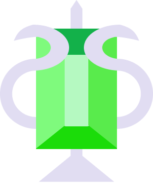
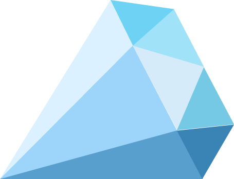
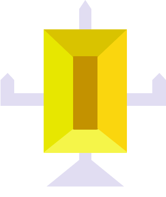
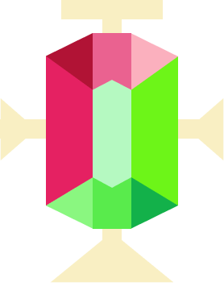

Who are we and what do we do?
We are not just jewelers; we are storytellers and guardians of nature's most exquisite treasures. Our atelier was born from a deep passion for rare gemstones and the belief that every stone holds a unique energy waiting to find its owner. We believe jewelry is more than adornment — it is a personal talisman, a keeper of memories, and an extension of one's soul.

We travel the world to source conflict-free gems with exceptional character, hand-selecting each sapphire, emerald, ruby, and tourmaline directly from trusted mines and cutters. In our studio, master goldsmiths transform these raw wonders into heirloom-quality pieces, blending timeless techniques with modern design. We are a curated digital sanctuary for fine gemstones. Founded by certified gemologists, our mission is to make the ancient magic of precious stones accessible, transparent, and deeply personal for the modern collector.
But our true purpose begins where craftsmanship meets connection. We help you navigate this vast world of color and light to discover your perfect selfstone — the single gemstone that resonates with your personality, marks your milestone, or simply captures your heart. Through personalized consultations, we listen to your story and guide you beyond trends, ensuring the gem you choose becomes a cherished part of your own legacy.
We hand-pick extraordinary, ethical jewels from across the globe and help you find the one selfstone that tells your story. No jargon, no pressure — just pure beauty matched to your soul. Tips for implementation:
- Personalization: Be sure to replace "Gems For You" with your actual company name if you use these texts on a live site.
- Visual pairing: This text works best when paired with strong visual elements like photos of your founders, videos of the cutting process, or a lookbook showing models wearing the selected gems.
- Call to action: Consider ending the section with a clear next step, such as a button inviting users to "Start Your Gem Consultation".



The Diamond: A Geological Miracle and the Apex of Jewelry Art
From the frozen depths of Siberian permafrost mines to the legendary volcanic pipes of South Africa, the diamond is more than a gemstone; it is a geological miracle, a fragment of eternity forged in the planet's fiery crucible. To the jeweler, the gemologist, and the connoisseur, the diamond represents the absolute pinnacle of nature's alchemy — a testament to the transformative power of heat, pressure, and time.
A diamond is carbon in its most perfect and resilient form. Approximately one to three billion years ago, at depths of 150 to 200 kilometers beneath the Earth's continental plates, carbon atoms were subjected to temperatures exceeding 1,200 degrees Celsius and pressures surpassing 45 gigapascals. In this primordial crucible, the atoms were forced into a rigid, isometric crystal lattice — a cubic system where every atom is bonded to four others with equal strength. This unique atomic architecture is the source of the diamond's legendary physical properties: it is the hardest known natural substance, an unparalleled conductor of heat, and possesses a density that allows it to cut through nearly any other material.
Billions of years later, violent volcanic eruptions, traveling at incredible speeds through kimberlite and lamproite pipes, carried these crystallized secrets to the surface. When the magma cooled, it left behind the diamond's only terrestrial home — a blue-hued rock known as kimberlite, waiting to be unearthed.
In the hands of the master cutter, the raw octahedral crystal — often resembling a piece of cloudy glass — reveals its true identity. The jeweler's perspective on a diamond is not merely aesthetic; it is architectural. The entire purpose of the cut is to manipulate light. When a ray of light enters a perfectly proportioned diamond, it slows down, bends (refracts), bounces off the internal pavilion facets (reflects), and returns to the viewer's eye, breaking into spectral colors (disperses). This triumvirate of optical performance — Brilliance (the return of white light), Fire (the dispersion of spectral colors), and Scintillation (the flashes of light seen when the diamond, the light, or the observer moves) — is the soul of the stone. The choice of setting is a critical artistic decision. A prong setting elevates the stone, allowing light to strike the pavilion from all angles, maximizing scintillation. A bezel setting encircles the diamond in a rim of metal, offering a sleek, protective, and contemporary silhouette that prioritizes the stone's outline over its internal fire. Pavé and micro-pavé work transform a band or halo into a continuous, liquid surface of light, where hundreds of tiny diamonds blur the line between gemstone and metalwork.
Sapphire
This precious stone, a precious variety of corundum second only to diamond in hardness and best known for its deep cornflower-blue color, has been revered since ancient times as a symbol of celestial purity, supreme wisdom, and absolute power. In ancient Greece, it was dedicated to Saturn as a source of prophetic insight, the Romans used it in medicine to cure ailments and ward off evil spirits, and in Russia it adorned the imperial crowns and the orb of the state regalia. The stone embodies fidelity, constancy, and truth, protecting its owner from envy, betrayal, and deception while granting clarity of thought and spiritual enlightenment. In the East, Buddhists believed that sapphire brought its owner closer to the state of Nirvana and inner harmony. In the modern world, its exceptional durability, chemical stability, and transparency across a wide spectrum have found critical application in the creation of scratch-resistant glass for luxury watches, protective screens for smartphones, high-durability optical lenses, and the observation windows of spacecraft and deep-sea submersibles.
Wisdom and clarity
Passion from negative energy
Protection from enemies
Ruby
A ruby is a precious variety of corundum, second only to diamond in hardness, whose value is determined by its rich, saturated red color, with the finest and rarest specimens known as "pigeon's blood" due to their deep crimson hue with a hint of purple. Since ancient times, this stone has symbolized fire, blood, power, and passionate love, serving as a powerful talisman that grants the owner vitality, confidence, and protection from enemies and negative forces. In the ancient cultures of India and Burma, warriors embedded rubies in their skin or carried them into battle to become invincible, while European monarchs viewed them as stones of divine right and absolute authority. Historically, rubies have for centuries adorned imperial and royal regalia, including crowns, scepters, and ceremonial jewelry, signifying the wearer's supreme status and wealth. In the modern world, beyond its traditional use in high jewelry, synthetic ruby crystals are utilized in high-precision instrumentation, such as watch movements, and in lasers due to their unique optical properties.
Emerald is one of the four main precious gemstones in the world, adorning the crowns of empresses and royal treasuries for millennia. Its primary value lies in its rich, vibrant green color, which ranges from light green to deep grassy hues. Unlike other minerals, almost every emerald contains natural inclusions that jewelers call the "jardin" (garden). The purity and depth of the shade directly determine the stone's cost, making flawless specimens among the most expensive gems on the planet.
In world culture, the emerald is considered a sacred stone symbolizing wisdom, fertility, fidelity, and immortality. The ancients believed it could heal the soul, open the heart, and protect its owner from evil. Its rich green color is associated with spring renewal, rebirth, and spiritual harmony. Furthermore, the stone symbolizes wit, eloquence, and foresight, and serves as a talisman for those born in May.

Other Gemstones
- Alexandrite is a rare precious stone from the chrysoberyl family, highly valued for its unique optical effect: it appears emerald-green in daylight and turns raspberry-red under artificial light. In jewelry, it is considered a stone of the highest order. Its symbolism is associated with the variability of fate, sharp intuition, and spiritual renewal, embodying the balance between physical and spiritual energy; in Russia, it is traditionally considered a stone of strength and longevity.
- Garnet is a bright precious or semi-precious stone, most famous for its deep red color, although green, orange, and black varieties also occur in nature. Thanks to its rich hue, it is often used in vintage jewelry. It symbolizes passion, inexhaustible energy, willpower, and devoted friendship. In ancient times, warriors wore garnet as an amulet, believing it illuminated the path in darkness & protected from wounds.
- Pearl is an organic precious stone formed inside mollusk shells. Unlike minerals, it requires no faceting, being valued for its natural spherical shape and gentle pearly luster. It symbolizes purity, femininity, innocence, and marital fidelity. In Eastern culture, it embodies wisdom accumulated over the years, while in European culture, it represents high status and noble origin.
- Aquamarine is a transparent precious stone of pure sea-water color, a variety of beryl. Its cool beauty and high transparency make it a popular material for creating elite jewelry. It symbolizes calmness, courage, and eternal youth. According to ancient legends, aquamarine is the treasure of mermaids, capable of calming storms and protecting travelers on long journeys.
- Topaz is a transparent and hard precious stone, which in nature often has a golden-yellow hue but is also found in blue, pink, and colorless varieties in jewelry. It is widely used in adornments due to its availability, high hardness, and bright shine. It symbolizes the joy of life, optimism, and true love. It is believed that topaz can expose intrigues, bring success in business, and protect the owner from the evil eye.



A timeless piece from the Gems For You atelier, the [Ring Style/Collection Name] ring is meticulously handcrafted to capture light and celebrate your most precious moments. Designed for effortless elegance, it blends classic silhouettes with modern comfort, making it a perfect heirloom for generations to come. Every curve of this band is engineered for a perfect, comfort-fit feel against the skin. The [Setting Type] setting securely cradles the gemstone, allowing maximum light to pass through and ignite its natural fire. Whether you are celebrating a milestone, marking a commitment, or simply treating yourself, this ring is a symbol of enduring beauty and the meticulous artistry of Gems For You.
Metal: [Metal Type & Purity] | Center Stone: [Carat Weight] [Stone Type] | Band Width: [X] mm. To maintain its brilliance, gently clean with a soft brush, warm water, and mild soap. Avoid contact with harsh chemicals, lotions, and perfumes. Store separately in the signature Gems For You pouch when not worn.
Elevate your collection with the Gems For You Gemstone Display Stand, a piece of functional art designed to showcase the unique character of every mineral. Crafted to make your specimens appear to float in mid-air, this stand captures and refracts light from every angle, revealing the inner fire, depth, and natural inclusions of your stones. Its minimalist silhouette ensures that the focus remains entirely on the beauty of the crystal, transforming any shelf, vanity, or display case into a private gallery and celebrating the raw elegance of nature's treasures.
A signature statement from the Gems For You atelier, the [Earring Style/Collection Name] earrings are meticulously handcrafted to frame the face with effortless radiance. Designed to move in harmony with you, they blend architectural precision with delicate artistry, catching the light with every turn of your head. Whether you are elevating your everyday look or completing an evening ensemble, these earrings are a testament to enduring beauty and the refined craftsmanship of Gems For You. Engineered with lightweight comfort-back closures, they offer all-day security without sacrificing comfort, allowing you to wear a piece of high jewelry from morning meetings to moonlit dinners.
Metal: [Metal Type & Purity, e.g., 14k Solid Gold / 925 Sterling Silver] | Total Length: [X] mm | Closure Type: [Push-back / Lever-back / Hook] | Gemstones: [Details, e.g., 0.5ct total G/VS Diamond / 8mm Freshwater Pearl]. To maintain their brilliance, gently clean with a soft brush, warm water, and mild soap. Avoid contact with hairspray, perfume, and cosmetics. Store flat in the signature Gems For You pouch to prevent scratching and preserve the luster of the metal.